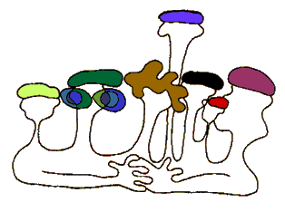

|
:e4 Meg :e4 Y0;
"okrig mi d.a3 ym jana[ovm5 oru ;e4
meg er5 ;e y0;1
Abrovm er Is;ampovlovm5 anovnu Ar;0 er`
osgyr[i zavag1
Pa3x nayv abrovm er Sofia3ovm5 ordy. anovnu
Aram er yv ha3ru` arhysdavor1
Pa3x nayv abrovm er :avrizovm5 ordy.
Arda,es ein go[ovm iryn yv ovsovx[i zavag er1
Pa3x nayv abrovm er Yryvanovm5 ordy.
Ardavazt er anovnu1 Ha3ru` Madynatarani a,qado.1
Pa3x nayv abrovm er Los An]ylusovm5 ordy.
anovnu Armen er5 my/ waja-agani d.a31
Kanisu| asaxi777 Hincu5 onx or1 Wyr]in
yrgovsn el Õor2ym 3i,yl1
Ovrymn abrovm er nayv Halypovm5 ordy.
anovnu Ar;ovn er5 yv ha3ru p=i,g er1 Wyr]abes abrovm er
Mon;ryalovm5 ordy. anovnu Ar,ag er5 ha3ru` jardarabyd1 Ar;0n5
Aramu5 Arda,esu5 Ardavaztu5 Armenu5 Ar;ovnn ov Ar,agu y0; had ein
;eyv5 pa3x yv a3nbes5 no3n d.ygn ein5 or arten das darygan er5
cryl6gartal lav er imanovm5 yv hy/anivow zari;aÕn i]nylovx Õor2ovm
er 2y-kyrn ov odkyru 0tovm bahyl1
Ar;0n ,eg er5 Aramn agnox ovner5 Arda,esu`
qovjovj mazyr1 Ardavaztu par2rahasag er5 Armenu` ;ovq5 Ar;ovnu`
niharig5 isg Ar,agu` mi ki[ [a.lig1 Pa3x dyse4k5 no3n d.ygn ein1

Ar;0n 3ajaq ;ovrkyrenow er hy-adysil
na3ovm5 Aramu` povl.aryrenow5 Arda,esu` barsgyrenow5 Ardavaztu`
ha3yrenow5 Armenu` anclyrenow5 Ar;ovnu` arapyrenow5 Ar,agu`
fransyrenow1 Pa3x dyse4k5 no3n d.ygn ein7 no3n lyzovow ein
/i/a.ovm1
Hima5 a3s mi d.ygu5 or nayv y0; e5 my/axyl
e1 Ordy. mivsin hantibi` o[ wej5 o[ g-iv e sarkovm1 <ovdow
lyzov e cdnovm1 {e| or ;e4 y0; e5 ;e4 meg1 |